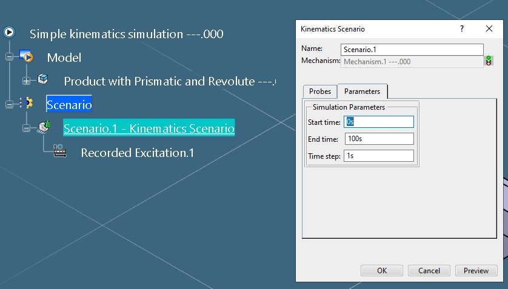
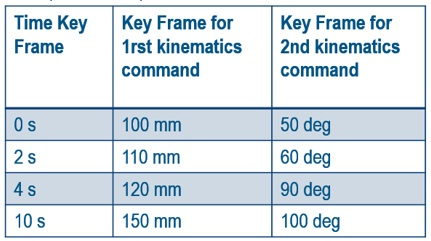
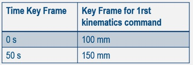

Overview |
| Technical Article |
AbstractThis article presents an overview of a kinematics simulation with a recorded excitation |
Starting with a kinematics simulation pointing a product with a mechanism, a set of automation objects (KinScenarioSpec,KinRecordedExcitation) will allow to create and handle a kinematics scenario with a recorded excitation.

This object identifies a kinematics scenario. It allows to get/set the parameters of a kinematics scenario. The initialization of the link to the mechanism is done thru the SimScenarioSpec object.
APIs capabilities can be summarized as follows:
The defaults values are the same as during an interactive 3D Experience session, respecting the following condition:
0s ≤ Start time ≤ End time
0s ≤ Time step ≤ End time - Start time
This object inherits from the SimExcitation object. It allows to get/set the parameters of the recorded excitation. This excitation can be seen as a time key frames plus a set of key frames values associated for each kinematics command of the mechanism.

APIs capabilities can be summarized as follows:
During the creation of the recorded excitation, the key frame times should be defined the first and then the others key frames. The size of each the key frames must be the same and equal to size of the key frames times.
Setting a new time key frames times will reset the others key frames values automatically.
The scenario execution follows the time line and simulated the mechanism for each time step.
If a step does not appear in the time key frame, the missing time value will be linearly interpolated between the two closest time values. That means that giving just 2 values min and max for a kinematics command will allow to simulate all the intermediate values between min and max values.

In the above example, assuming that the step of the scenario is 1s. The kinematics simulation will be done by increasing the command value by 1mm from 100 mm up to 150 mm.
It is noticeable that a way to improve the accuracy of the simulation is to decrease the time step value, without changing the recorded excitation.
| [1] | SimScenarioSpec , SimExcitation |
| Version: 1 [Nov 2021] | Document created |